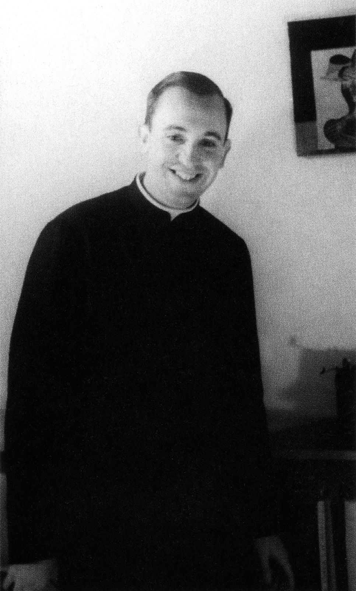
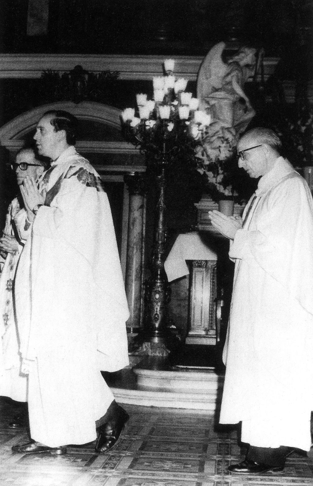
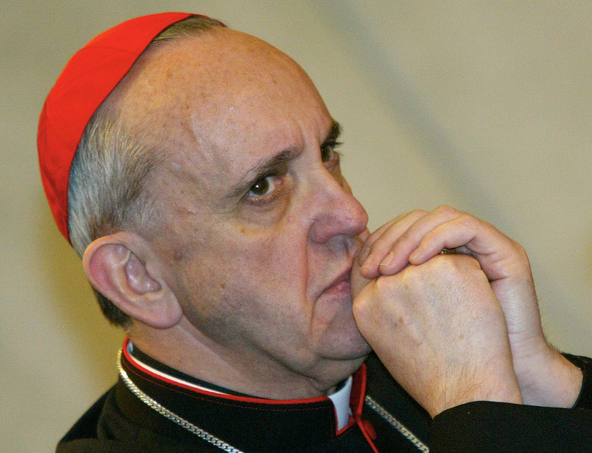
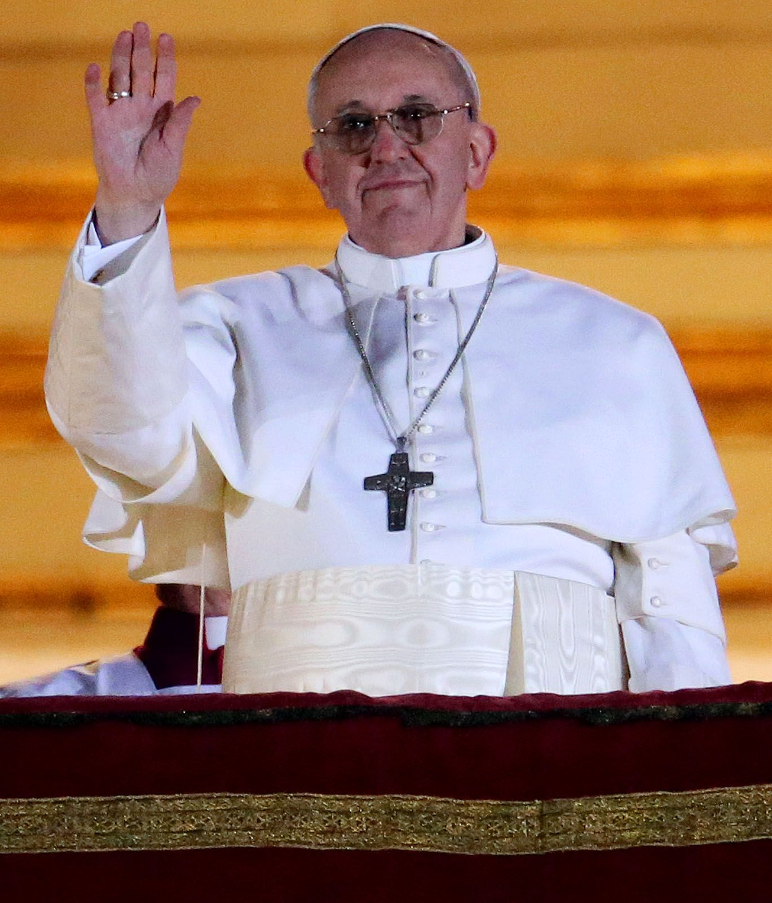

Giai đoạn Tuổi trẻ:
Jorge Mario Bergoglio sinh ngày 17/12/1936 tại Buenos Aires, Argentina, trong một gia đình gốc Ý. Cha ông là công nhân đường sắt. Ông là con cả trong 5 người con.

Giai đoạn Tu trì:
Năm 1958, ông gia nhập Dòng Tên và được thụ phong linh mục năm 1969. Ông học triết học, thần học và đảm nhận vai trò giảng dạy cũng như lãnh đạo trong dòng.

Giai đoạn Hồng y:
Năm 1998, ông được bổ nhiệm làm Tổng Giám mục Buenos Aires. Năm 2001, Giáo hoàng Gioan Phaolô II phong ông làm Hồng y.

Giáo hoàng Phanxicô:
Ngày 13/3/2013, ông được bầu làm Giáo hoàng thứ 266 của Giáo hội Công giáo Rôma – vị giáo hoàng đầu tiên đến từ châu Mỹ Latin và thuộc Dòng Tên.